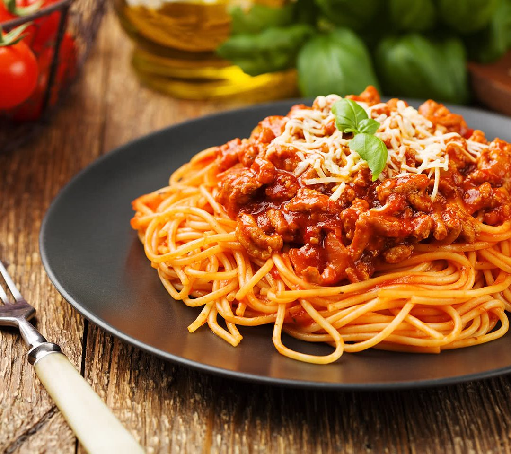

Spaghetti Bolognese

Spaghetti bolognese consists of spaghetti (long strings of pasta) with an Italian ragù (meat sauce) made with minced beef, bacon and tomatoes, served with Parmesan cheese. Spaghetti bolognese is one of the most popular pasta dishes eaten outside of Italy.
Steps to making Bolognese
- Saute garlic and onion – about 3 minutes;
- Brown the beef – about 2 minutes;
- Add everything else, give it a good stir then simmer for 20 minutes minimum (midweek), up to 3 hours (weekend indulgence!). Slow cooking makes the beef incredibly tender and the sauce develops extra flavour.